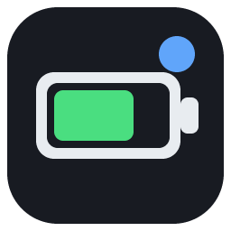

BT Battery Overlay 설정
표시할 장치
연결 끊긴 장치도 표시
페어링만 된 장치를 흐리게 표시
배터리 정보 없는 장치도 표시
Windows에 배터리를 보고하지 않는 장치(일부 키보드/마우스)
모양
배경 투명도
패널 배경의 불투명도
전체 투명도
글자를 포함한 창 전체
테마
다크
라이트
강조색
컴팩트 모드
한 줄로 간단히 표시
동작
새로고침 주기
15초
30초
1분
2분
5분
항상 위에 표시
위치 잠금
드래그로 이동 불가
클릭 통과
오버레이가 마우스를 무시 (트레이 메뉴에서 해제)
배터리 부족 알림
% 이하
Windows 시작 시 자동 실행
기타
남은 예상 시간은 배터리 % 변화를 시간에 따라 기록해 계산합니다. 사용 후 10분 이상, 2% 이상 소모되어야 표시되며 쓸수록 정확해집니다.